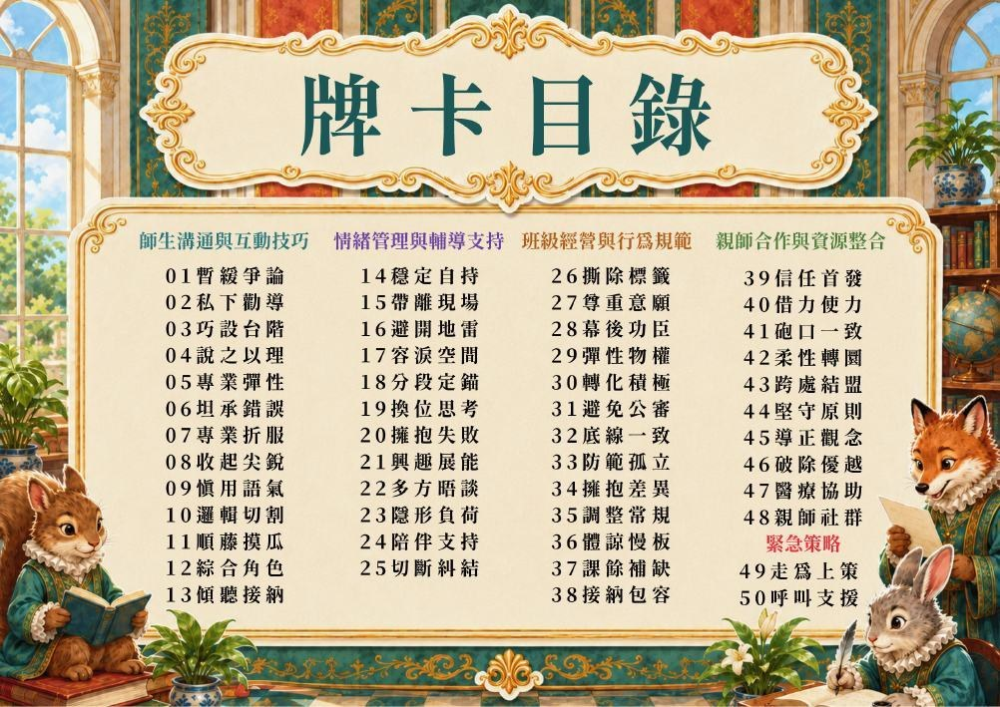
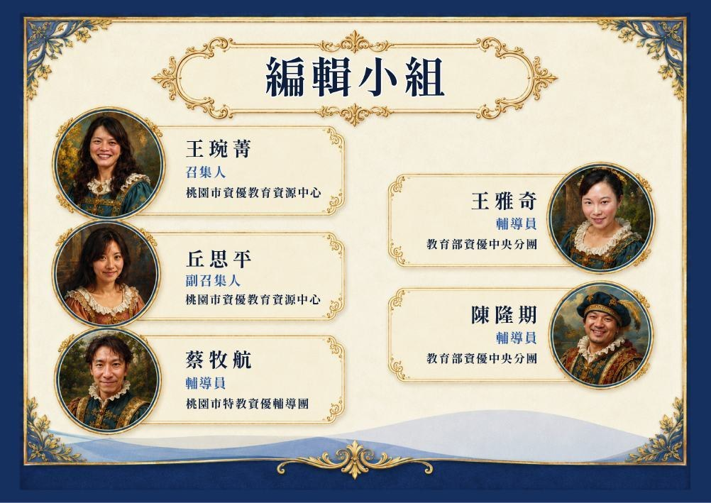
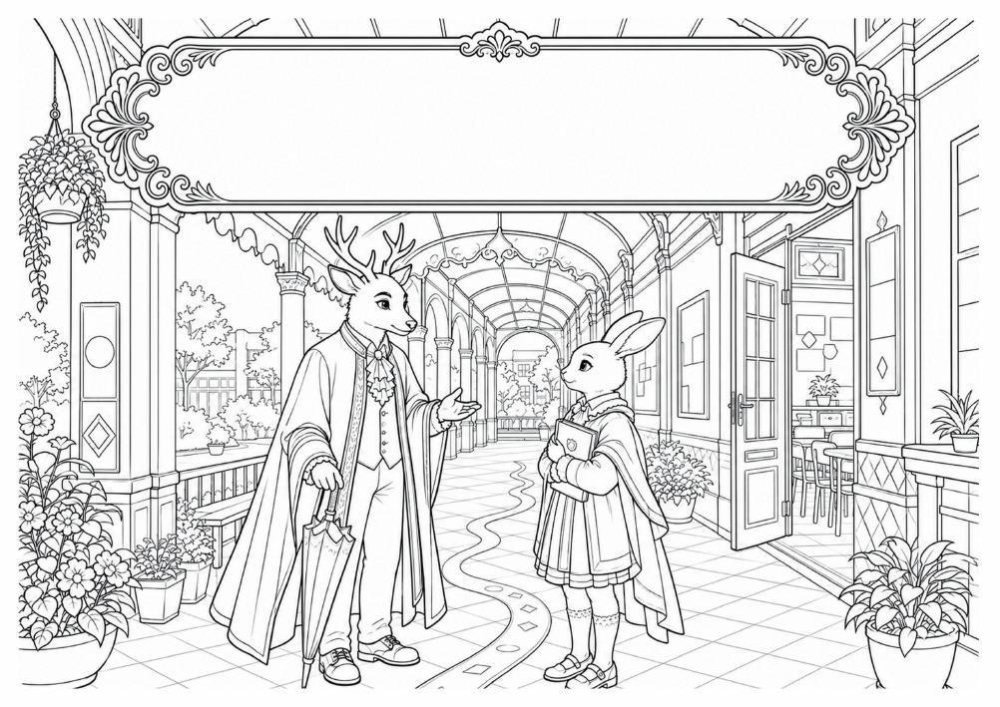
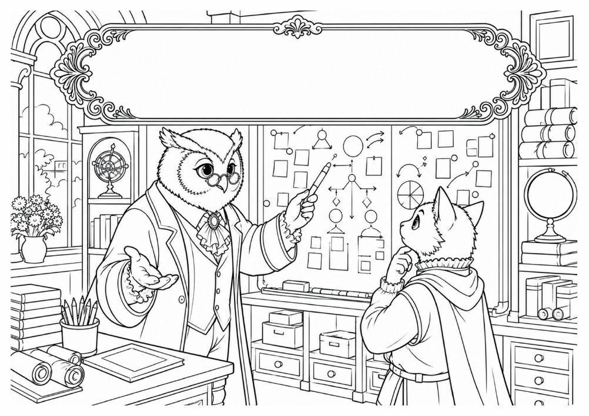
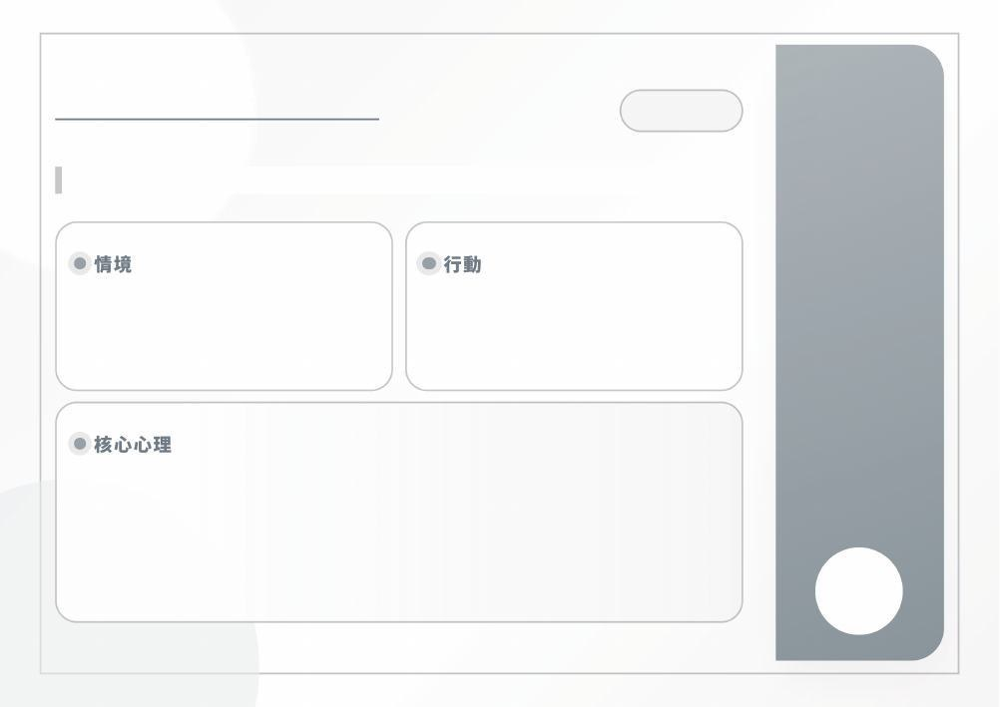

普特融合 · 教育實務章節閱讀版
APPENDIX / 補充資料
編輯資訊與空白牌卡
保留文件前後頁面，完整對照原書。
封面
普特共榮
資優親師生溝通輔導班級經營實務指南
查看原始頁面 · PDF 第 1 頁

合作單位
教育部資優央團
教育部特殊教育資優類中央輔導團
RCGT
桃園市資優教育資源中心
查看原始頁面 · PDF 第 2 頁
牌卡目錄
牌卡目錄
師生溝通與互動技巧
01 暫緩爭論
02 私下勸導
03 巧設台階
04 說之以理
05 專業彈性
06 坦承錯誤
07 專業折服
08 收起尖銳
09 慎用語氣
10 邏輯切割
11 順藤摸瓜
12 綜合角色
13 傾聽接納
情緒管理與輔導支持
14 穩定自持
15 帶離現場
16 避開地雷
17 容淚空間
18 分段定錨
19 換位思考
20 擁抱失敗
21 興趣展能
22 多方晤談
23 隱形負荷
24 陪伴支持
25 切斷糾結
班級經營與行為規範
26 撕除標籤
27 尊重意願
28 幕後功臣
29 彈性物權
30 轉化積極
31 避免公審
32 底線一致
33 防範孤立
34 擁抱差異
35 調整常規
36 體諒慢板
37 課餘補缺
38 接納包容
親師合作與資源整合
39 信任首發
40 借力使力
41 砲口一致
42 柔性轉圜
43 跨處結盟
44 堅守原則
45 導正觀念
46 破除優越
47 醫療協助
48 親師社群
緊急策略
49 走為上策
50 呼叫支援
查看原始頁面 · PDF 第 3 頁

編輯小組
編輯小組
王琬菁 召集人 桃園市資優教育資源中心
丘思平 副召集人 桃園市資優教育資源中心
蔡牧航 輔導員 桃園市特教資優輔導團
王雅奇 輔導員 教育部資優中央分團
陳隆期 輔導員 教育部資優中央分團
查看原始頁面 · PDF 第 4 頁

策略牌卡扉頁
策略牌卡
查看原始頁面 · PDF 第 9 頁
空白牌卡
查看原始頁面 · PDF 第 110 頁

空白策略欄位
情境
行動
核心心理
查看原始頁面 · PDF 第 111 頁

空白牌卡
查看原始頁面 · PDF 第 112 頁

空白策略欄位
情境
行動
核心心理
查看原始頁面 · PDF 第 113 頁
